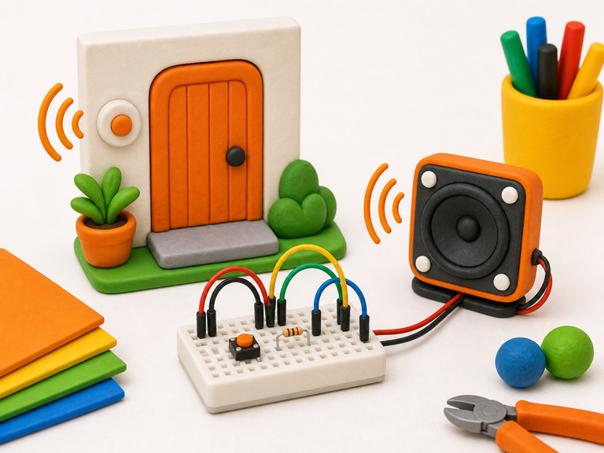
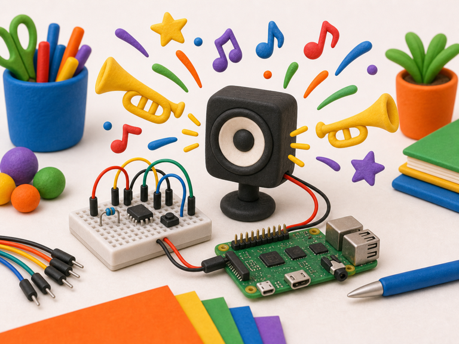

Door chime
DetectDoor opens
->
DecideVisitor arrived
->
DoPlay tune
A speaker lets your project play tones and simple tunes.
Code changes the signal quickly to make the speaker vibrate at different pitches.
Your projects can use speakers for melodies, warnings, secret jingles, and dramatic noises.


from gpiozero import TonalBuzzer
from gpiozero.tones import Tone
speaker = TonalBuzzer(17)
speaker.play(Tone('A4'))from picozero import Speaker
speaker = Speaker(2)
speaker.play('E4', duration=1)speaker.play() after a Detect brick spots something.